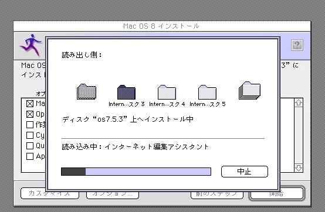

Macintosh(68k,PowerPC)エミュレータ
インテルマック以降のマックで古いネスケを動かそうとして、PowerPCアプリケーションはサポートされていませんと出てがっかりした事はありませんか?
マックに誕生日を祝われたい?
OS Xはただでさえ動かせるソフト少ないのに最新のバージョンは32bitが動かない!!(自分で自分の首を占めていると思うのは自分だけ?) そんな時はエミュレータで動かしてみよう！！
で、
現在使用しているエミュレートソフトと動かし方は下で解説
Basilisk2
1.(System 7.0から漢字Talkをインストール)
OSのインストールディスクイメージ 漢字Talk 7.5.3 のイメージ
Macintosh Garden
※昔appleのftpから入手できたが現在はリンク切れ インターネットアーカイブにも残っていません
予めSystem 7.0がインストール済みのイメージ
systemのイメージ(直リンク)
MacintoshのROMイメージ
eBayとかヤフオクで80年代後半~90年代前半の68k Macintoshを入手し、吸い出す。PowerMacintoshはダメ ググれば入手できる。
それ以外は下記のURLのフォーラムからダウンロード
BasiliskII for Windows • E-Maculation Forum
注 Windows 10 1903では同じ設定でも再起動時に画面が真っ白になるなど動作が安定しませんでした。8.1では安定して動作したので、多分7とかで大丈夫だと思います。
インストールまでの手順
HFV Explorerを起動してメニューバー左上の""Format New Volume"を洗濯
ダイアログ内の空白のボックスに上からボリューム名、容量、保存先のパスを指定
左ベインから漢字Talkが保存してあるディレクトリに移動し、ファイルをツールバーからコピーする。そして先ほど作成したボリュームに移動し、ペーストする。
BasiliskGUI.exeを起動し、Generalタブに移動する。そして設定を以下のように設定する。(注 system7.0を起動させるときはなるべく古いマッキントッシュで行うように)
screenタブで任意の設定を行う。Diskタブで解凍したsystem7のディスク、漢字Talkのディスクのパスを指定(ちなみにbasilisk2と同ディレクトリにディスクのファイルを置くと、ソフトに絶対パスが表示されない)
起動すると画面にダイアログが表示されるが、そのままクリックするとデスクトップ画面が表示される。(ぱっと見現在のOS Xとあまり変わらん...)
先ほどHFV Explprerで作成したディスクがマウントされているので、中の漢字Talkのファイルをクリックし、解凍させる。
あとは画面の指示(フィーリング)に従ってインストールを進める。
インストールが終わり、つずけるか再起動するか問われる画面が出るので再起動させる。 再起動時にMac OSのロゴが出て、爆弾もなくデスクトップが表示されたら完了です。
おまけ Mac OS 8を新規インストール/漢字Talkからインストール
Mac OS 8を新規インストール
basilisk2を終了させて、 ファイルBasiliskⅡ_prefsをメモ帳などで開き、3行目のCDのパスをisoの絶対パスに書き換える。
ファイルを上書き保存し、再度basilisk2を開く。機種やromを以下のようにし、generalタブからboot driverをcdにする 後はOSを起動させ、CD内のユーティリティでディスクをフォーマットし、インストールする。
(画像では漢字 Talk上からインストールを行なっているが、CDから起動させると、背景はcDがずらっと並んだ画像になる。 )

参考サイト
Windows 8.1で68k Macを動かす
Windowsで古いMacOSを動かす – KANI'S HOMEPAGE
Basilisk2 Costomize
vmwareでmac os x
pearpcでos x pearpcをダウンロードする。ppc.configの例
設定ファイル
インストール後の画面
qemuでos9
qemuダウンロード先(OSX)
Windoes用
上で示したフォーラムのページ上部に示されているqemuは音声出力をサポートしていません ページを下に下げるとサウンドがサポートされたバージョンがダウンロードできます
DOSプロンプトでqemuが展開されたディレクトリに移動し、 ./qemu-img create -f raw -o size=2G MacOS9.2.img と入力 、実行sる。 size=で容量を指定し、その後ろでファイル名を指定する。
参考サイト
Qemu PPC for OSX [E-Maculation wiki
ドキュメント/プラットフォーム/ PowerPC-QEMU
Documentation/Platforms/PowerPC - QEMU
QEMUでMac OS 9をエミュレートする| ジェームズバジャー
QEMU for Windows
Mac OS X 10.0 (QEMU EMULATION) - Google ドライブ
Qemuで遊ぼうのこーなー
Win10でMacOS9 (with QEMU): 河村日記？
Mac OS X 10.0 (QEMU EMULATION) - Google ドライブ


 あとは画面の指示(フィーリング)に従ってインストールを進める。
あとは画面の指示(フィーリング)に従ってインストールを進める。